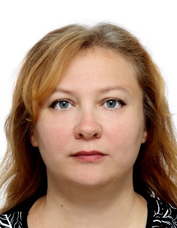

Шевченко Марина Алексеевна

Дата рождения: 04.04.1975г
Город проживания: Ростов-на-Дону
Образование: Высшее: СКАГС, факультет Мировая экономка, окончание в 2005году
| Должность | Обязанности |
| С 1993 года по 2007 год | Сбербанк |
| Инспектор по обслуживанию юридических лиц | Расчетно-кассовое обслуживание юридических лиц, тестирование новых программных продуктов |
| Ведущий инспектор Корпоративного отдела | Тестирование банковского ПО методом «черного ящика» (БИК IBSO). Сдача отчетности, составление новой отчетности, работа с Базой данных, анализ данных, написание отчетов по информации, полученных из Баз данных. |
| Начальник Операционного отдела | Тестирование банковского ПО методом «черного ящика» (БИК IBSO). Руководство отделом (в подчинении 80 человек), сбор информации, проверка информации, составление новых отчетов, составление бизнес-требований к ПО |
| С 2008 года по 2022 год | Индивидуальный педприниматель |
| Индивидуальный педприниматель | Составление модели бизнес-процессов. Разработка ТЭО, бизнес-плана на новые проекты. Подбор нового бизнеса, нового проекта для клиента. Подбор программного обеспечения для некоторых видов деятельности предприятия. И др. Руководство магазином |
Дополнительное образование
- Веб-разработка для начинающих: HTML и CSS Сертификат
- Интерактивный тренажер по SQL Сертификат
- Поколение Python: курс для начинающих Сертификат
- Постановка задачи на разработку ПО Сертификат
- Основы HTML/CSS - верстка сайтов с нуля Сертификат
Профессиональные навыки
- HTML/CSS
- JS
- Java
- Python
- Microsoft Office
- MySQL
- Английский язык уровень A2
Личные качества:
- Работать в команде
- Усидчивость
- Внимательность
- Аналитическое мышление
- Математичекийй склад ума
- Грамотная речь
- Быстрая обучаемость
- Ответственность
- Целеустремленность
Водительские права: категории В (есть личный автомобиль)
Семейное положение: разведена
Дети:
- Совершеннолетняя дочь (23 года)
- Несовершеннолетняя дочь (11 лет)
Хобби:
- Чтение фантастики
- Игры в жанре ММОРПГ
- Вязание